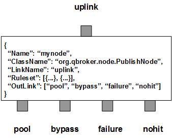

PublishNode is a message node that supports Pub/Sub on JMS messages. PublishNode picks up a JMS message from the input XQueue and extracts the topic string from it. It looks up the topic cache for the list of subscriptions on the topic. If the list is not empty, PublishNode just loops through the list and creates a copy of the message for each subscription. A subscription contains a template to build the unique URI of publications. PublishNode will set the URIs to the subscribed messages before flushing them downstream.
There are four fixed outlinks, pool, bypass, failure and nohit. All subscribed copies of the incoming message will be routed to the outlink of pool. The original incoming message will be routed to bypass. Any failure will cause the incoming message routed to the outlink of failure. If there is no subscriptions for the topic, the incoming message will be routed to the outlink of nohit. Since there may be multiple subscriptions for an incoming message, please make sure the outlink of pool has the capacity no less than the maximum number of subscriptions.
PublishNode contains a number of rulesets. Each ruleset defines a unique subscription with a name, a group of property patterns, and a URI template for delivery. It may also have an active time window for blackout. The number of the rulesets and their content may change dynamically on demand.
PublishNode always creates two extra rulesets. The first one is the nohit ruleset for those messages whose topic has no subscribers. The second is the candidate ruleset for all messages whose topic has at least one subscriber. Since a candidate message may hit number of subscriptions and generates a copy of the message for every hit subscriptions, the stats count for the candidate ruleset will be the number of the incoming messages rather than the number of the copies. The number of copies will be counted by their own rulesets. The displaymask and stringproperty of the ruleset are used to display the details of dispatched messages for the ruleset. The stats of the rulesets are stored in the fields of RULE_SIZE, RULE_COUNT and RULE_PEND. RULE_PEND is for number of cached topics, RULE_SIZE for number of preliminary hits, whereas RULE_COUNT is for number of real hits.
SessionTimeout determines how often to clean up expired topics from the cache. If SessionTimeout is larger than zero, any cached topics will be expired if their idle time exceeds SessionTimeout. Those expired topics will be removed from the cache in next session to save resources. TopicTemplate defines a template with multiple property names delimited by a space char. It is required for extracting topic string from a message. URIField specifies where to store the delivery URI in the subscribed messages. By default, it is set to pubURI.
You are free to choose any names for all four outlinks. But PublishNode always assumes the first outlink for pool, the second for bypass, the third for failure and the last for nohit. The names of pool has to be different from others. However, the rest of the outlinks can share the same name.
Apart from the common properties, there are some implementation specific properties for PublishNode.
| Property Name | Data Type | Requirement | Description | Examples |
|---|---|---|---|---|
| TopicTemplate | string | mandatory | template to build the topic | ##site## ##name## |
| URIField | string | optional | field name to store delivery URI | pubURI |
| SessionTimeout | integer | optional | timeout in second for a session | 7200 (default: 86400) |
The publish operation is executed via the pre-defined rulesets. Therefore, the configuration of the rulesets is critical to the operations of PublishNode. In fact, each ruleset defines a subscription. Here are complete properties of rulesets for PublishNode.
| Property Name | Data Type | Requirement | Description | Examples |
|---|---|---|---|---|
| Name | alphanumeric with no spaces | mandatory | name of the ruleset | event |
| URITemplate | string | mandatory | template of URI for delivery | http://##hostname## |
| URISubstitution | string | optional | text subsctitution of URI for delivery | s/^0// |
| ActiveTime | list | optional | active time window for the subscription | see example |
| JMSPropertyGroup | list | optional | list of pattern groups on properties to select messages | see example |
| XJMSPropertyGroup | list | optional | list of pattern groups on properties to exclude messages | see example |
| StringProperty | map | optional | for logging of message properties | see example |
| DisplayMask | integer | optional | mask for loggings | 64 (default: 0) |
Here is an example of PublishNode:
{
"Name": "node_publish",
"ClassName": "org.qbroker.node.PublishNode",
"Operation": "publish",
"Capacity": "1024",
"LinkName": "pub",
"XAMode": "1",
"MaxNumberRule": "4096",
"SessionTimeout": "86400",
"TopicTemplate": "##JMSType## ##site##",
"DisplayMask": "7",
"Debug": "1",
"StringProperty": {
"uri": "",
"site": ""
},
"Ruleset": [{
"Name": "story",
"JMSPropertyGroup": [{
"JMSType": "^www/story/"
}],
"URITemplate": "wmq://broker1/?Operation=put&QueueName=STORY"
},{
"Name": "video",
"JMSPropertyGroup": [{
"JMSType": "^www/video/"
}],
"URITemplate": "wmq://broker1/?Operation=put&QueueName=VIDEO"
},{
"Name": "keyframe",
"JMSPropertyGroup": "
"JMSType": "^www/keyframe"
}],
"URITemplate": "http://web1/rest/keyframe/?Operation=store"
}],
"OutLink": ["pool", "post", {
"Name": "failure",
"Capacity": "384",
"Partition": "256,64"
}, "post"]
}
where it builds the topic from two properties of the messages. The node has
three subscriptions. The destinations of the first two are MQ queues on
broker1. The last destination is a web service on mam1.
PublishNode also supports a group of rulesets or subscriptions based on ConfigList or ConfigTemplate. ConfigList manages a list of configurations stored in a separate repository. ConfigTemplate manages a list of configurations sharing a same property template. Please check EventDispatcher for the details about ConfigList. Here we just focus on ConfigTemplate.
A ConfigTemplate is a Template to generate a group of configuration properties based on a given item list. The item list can be static or dynamic. PublishNode uses ConfigTemplate to manage a group of rulesets or subscriptions via an item list. So you do not have to define each ruleset one by one. Here is an example:
{
...
"Ruleset": [{
"Name": "sub_main",
"Template": "##path##",
"RuleType": "ConfigTemplate",
"Property": {
"Name": "sub_main",
"JMSPropertyGroup": [{
"name": "^by2min$"
}],
"URITemplate": "##path##"
},
"Item": [
"/full/P.full.json",
"/full/H.full.json",
"/full/S.full.json",
"/full/H.keyRaces.json",
"/full/combined.latest.json",
"/flipper/P.json"
]
}],
...
}
where ##path## is the only variable or the place holder referenced in
both Template and URITemplate. It will be replaced by each item of the list.
URITemplate is used to build pubURI for the rule, whereas Template is used to
generate the unique name of the rule.
As you can see, it has a list of items and a template to generate rulesets.
So you do not need to define the ruleset for each one of them.